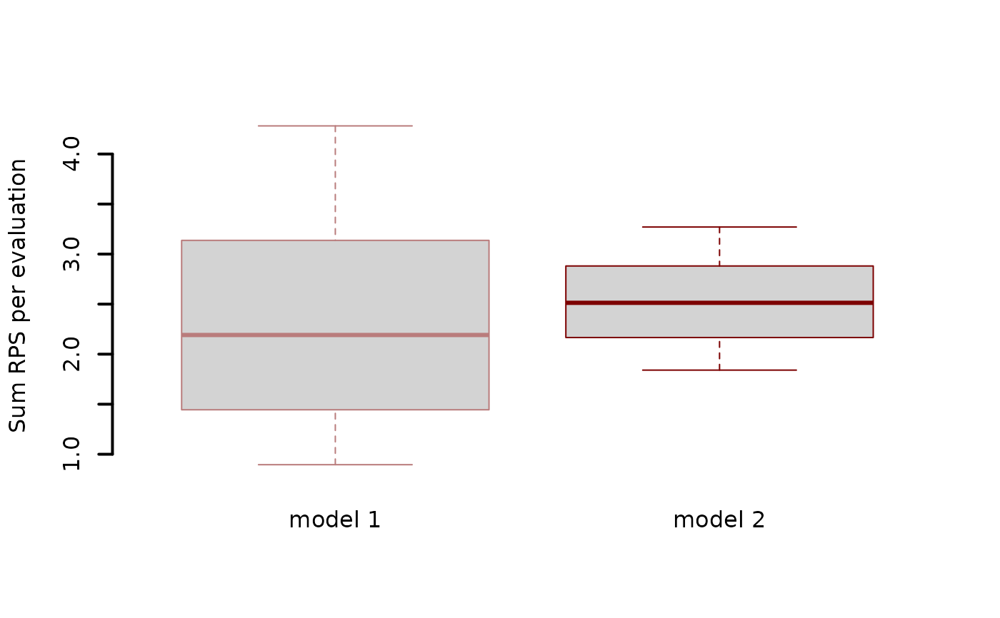
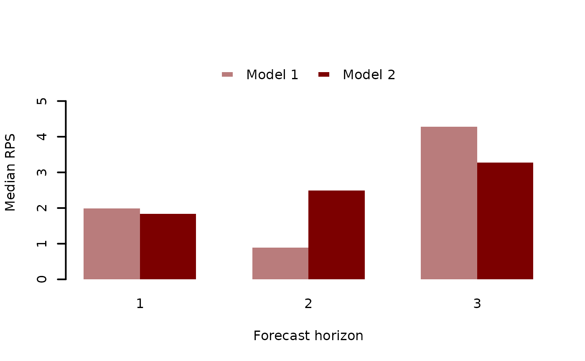
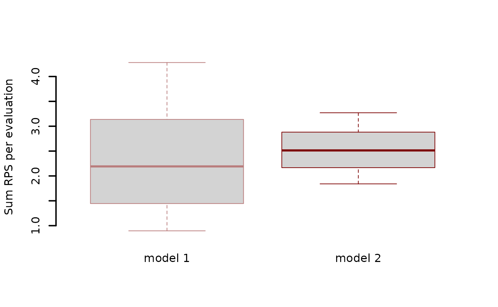
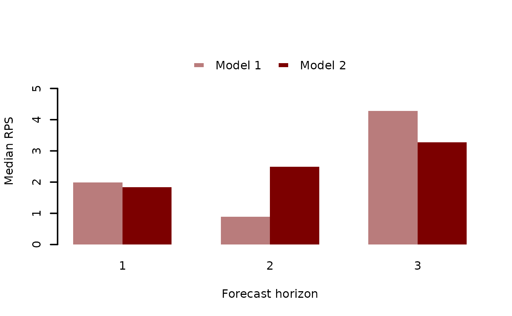

Evaluate forecasts from fitted mvgam objects
Usage
eval_mvgam(
object,
n_samples = 5000,
eval_timepoint = 3,
fc_horizon = 3,
n_cores = 1,
score = "drps",
log = FALSE,
weights
)
roll_eval_mvgam(
object,
n_evaluations = 5,
evaluation_seq,
n_samples = 5000,
fc_horizon = 3,
n_cores = 1,
score = "drps",
log = FALSE,
weights
)
compare_mvgams(
model1,
model2,
n_samples = 1000,
fc_horizon = 3,
n_evaluations = 10,
n_cores = 1,
score = "drps",
log = FALSE,
weights
)Arguments
- object
listobject returned frommvgam- n_samples
integerspecifying the number of samples to generate from the model's posterior distribution- eval_timepoint
integerindexing the timepoint that represents our last 'observed' set of outcome data- fc_horizon
integerspecifying the length of the forecast horizon for evaluating forecasts- n_cores
Deprecated. Parallel processing is no longer supported
- score
characterspecifying the type of ranked probability score to use for evaluation. Options are:variogram,drpsorcrps- log
logical. Should the forecasts and truths be logged prior to scoring? This is often appropriate for comparing performance of models when series vary in their observation ranges- weights
optional
vectorof weights (wherelength(weights) == n_series) for weighting pairwise correlations when evaluating the variogram score for multivariate forecasts. Useful for down-weighting series that have larger magnitude observations or that are of less interest when forecasting. Ignored ifscore != 'variogram'- n_evaluations
integerspecifying the total number of evaluations to perform- evaluation_seq
Optional
integer sequencespecifying the exact set of timepoints for evaluating the model's forecasts. This sequence cannot have values<3or> max(training timepoints) - fc_horizon- model1
listobject returned frommvgamrepresenting the first model to be evaluated- model2
listobject returned frommvgamrepresenting the second model to be evaluated
Value
For eval_mvgam, a list object containing information on specific evaluations for each series
(if using drps or crps as the score) or a vector of scores when using variogram.
For roll_eval_mvgam, a list object containing information on specific evaluations for each series as well as
a total evaluation summary (taken by summing the forecast score for each series at each evaluation and averaging
the coverages at each evaluation)
For compare_mvgams, a series of plots comparing forecast Rank Probability Scores for each competing
model. A lower score is preferred. Note however that it is possible to select a model that ultimately
would perform poorly in true out-of-sample forecasting. For example if a wiggly smooth function of 'year'
is included in the model then this function will be learned prior to evaluating rolling window forecasts,
and the model could generate very tight predictions as a result. But when forecasting ahead to timepoints
that the model has not seen (i.e. next year), the smooth function will end up extrapolating, sometimes
in very strange and unexpected ways. It is therefore recommended to only use smooth functions for
covariates that are adequately measured in the data (i.e. 'seasonality', for example) to reduce possible
extrapolation of smooths and let the latent trends in the mvgam model capture any
temporal dependencies in the data. These trends are time series models and so will provide much more
stable forecasts
Details
eval_mvgam may be useful when both repeated fitting of a model using update.mvgam
for exact leave-future-out cross-validation and approximate
leave-future-out cross-validation using lfo_cv are impractical. The function generates a set of samples representing fixed parameters estimated from the full
mvgam model and latent trend states at a given point in time. The trends are rolled forward
a total of fc_horizon timesteps according to their estimated state space dynamics to
generate an 'out-of-sample' forecast that is evaluated against the true observations in the horizon window.
This function therefore simulates a situation where the model's parameters had already been estimated but
we have only observed data up to the evaluation timepoint and would like to generate forecasts from the
latent trends that have been observed up to that timepoint. Evaluation involves calculating an
appropriate Rank Probability Score and a binary indicator
for whether or not the true value lies within the forecast's 90% prediction interval
roll_eval_mvgam sets up a sequence of evaluation timepoints along a rolling window and iteratively
calls eval_mvgam to evaluate 'out-of-sample' forecasts.
Evaluation involves calculating the Rank Probability Scores and a binary indicator
for whether or not the true value lies within the forecast's 90% prediction interval
compare_mvgams automates the evaluation to compare two fitted models using rolling window forecast evaluation and
provides a series of summary plots to facilitate model selection. It is essentially a wrapper for
roll_eval_mvgam
Examples
# \donttest{
# Simulate from a Poisson-AR2 model with a seasonal smooth
set.seed(1)
dat <- sim_mvgam(T = 75,
n_series = 1,
prop_trend = 0.75,
trend_model = AR(p = 2),
family = poisson())
# Fit an appropriate model
mod_ar2 <- mvgam(y ~ s(season, bs = 'cc'),
trend_model = AR(p = 2),
family = poisson(),
data = dat$data_train,
newdata = dat$data_test,
chains = 2,
silent = 2)
# Fit a less appropriate model
mod_rw <- mvgam(y ~ 1,
trend_model = RW(),
family = poisson(),
data = dat$data_train,
newdata = dat$data_test,
chains = 2,
silent = 2)
# Compare Discrete Ranked Probability Scores for the testing period
fc_ar2 <- forecast(mod_ar2)
fc_rw <- forecast(mod_rw)
score_ar2 <- score(fc_ar2, score = 'drps')
score_rw <- score(fc_rw, score = 'drps')
sum(score_ar2$series_1$score)
#> [1] 22.60649
sum(score_rw$series_1$score)
#> [1] 150.4021
# Use rolling evaluation for approximate comparisons of 3-step ahead
# forecasts across the training period
compare_mvgams(mod_ar2,
mod_rw,
fc_horizon = 3,
n_samples = 1000,
n_evaluations = 5)
#> RPS summaries per model (lower is better)
#> Min. 1st Qu. Median Mean 3rd Qu. Max.
#> Model 1 0.969002 1.533884 2.098765 2.420098 3.145646 4.192528
#> Model 2 1.872385 2.191963 2.511542 2.681447 3.085978 3.660415
#>
#> 90% interval coverages per model (closer to 0.9 is better)
#> Model 1 0.9333333
#> Model 2 1
 

# Now use approximate leave-future-out CV to compare
# rolling forecasts; start at time point 40 to reduce
# computational time and to ensure enough data is available
# for estimating model parameters
lfo_ar2 <- lfo_cv(mod_ar2,
min_t = 40,
fc_horizon = 3,
silent = 2)
lfo_rw <- lfo_cv(mod_rw,
min_t = 40,
fc_horizon = 3,
silent = 2)
# Plot Pareto-K values and ELPD estimates
plot(lfo_ar2)
plot(lfo_rw)
# Proportion of timepoints in which AR2 model gives
# better forecasts
length(which((lfo_ar2$elpds - lfo_rw$elpds) > 0)) /
length(lfo_ar2$elpds)
#> [1] 0.8461538
# A higher total ELPD is preferred
lfo_ar2$sum_ELPD
#> [1] -57.64126
lfo_rw$sum_ELPD
#> [1] -74.73546
# }


# Now use approximate leave-future-out CV to compare
# rolling forecasts; start at time point 40 to reduce
# computational time and to ensure enough data is available
# for estimating model parameters
lfo_ar2 <- lfo_cv(mod_ar2,
min_t = 40,
fc_horizon = 3,
silent = 2)
lfo_rw <- lfo_cv(mod_rw,
min_t = 40,
fc_horizon = 3,
silent = 2)
# Plot Pareto-K values and ELPD estimates
plot(lfo_ar2)
plot(lfo_rw)
# Proportion of timepoints in which AR2 model gives
# better forecasts
length(which((lfo_ar2$elpds - lfo_rw$elpds) > 0)) /
length(lfo_ar2$elpds)
#> [1] 0.8461538
# A higher total ELPD is preferred
lfo_ar2$sum_ELPD
#> [1] -57.64126
lfo_rw$sum_ELPD
#> [1] -74.73546
# }